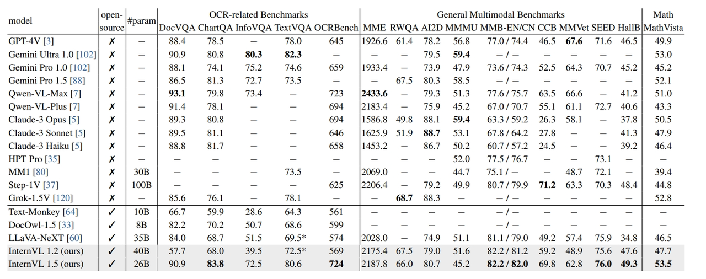

InternVL Family: Closing the Gap to Commercial Multimodal Models
CVPR 2024 (Oral)
Abstract
InternVL is a 6-billion-parameter vision-language foundation model that, with only 28% of the parameter count, possesses visual capabilities equivalent to ViT-22B. It integrates with large language models (LLM) through an innovative progressive alignment strategy to construct a multimodal dialogue system. InternVL has achieved optimal performance on 32 general vision-language benchmark tasks!
- Powerful Visual Encoder. InternVL 1.5, through its unique visual encoder, InternViT-6B, employs a continuous learning strategy to greatly enhance the depth and breadth of visual understanding. This strategy enables InternViT-6B to achieve seamless transfer and reuse among various large language models, strengthening the model's ability to parse complex visual content and exhibit more precise recognition and interpretation capabilities in image-intensive tasks.
- Dynamic High Resolution. InternVL 1.5 introduces a brand-new dynamic high-resolution strategy for image processing.This feature supports input resolutions of up to 4K, optimizing the presentation of image details and improving the model's expressiveness and accuracy on high-resolution images, while also ensuring efficient computation. This revolutionary feature significantly enhances the overall image processing performance and is expected to be a game-changer in the field of image processing.
- High-Quality Bilingual Dataset. InternVL 1.5 integrates a wide range of high-quality bilingual datasets covering English and Chinese, significantly improving the model's operational flexibility and accuracy in multilingual environments. In addition, through the data translation pipeline developed by open-source large language models, InternVL 1.5 can automatically expand to more languages, showing tremendous potential in global applications.
 InternVL: Scaling up Vision Foundation Models and Aligning
for Generic Visual-Linguistic Tasks
InternVL: Scaling up Vision Foundation Models and Aligning
for Generic Visual-Linguistic Tasks
LLaVa InternVL connects the InternViT-6B vision encoder and the QLLaMA language middleware, utilizing a progressive alignment strategy. The training consists of three stages:
- Stage 1: Vision-Language Contrastive Training. Here, the vision encoder is aligned with a multilingual LLaMA-7B using large-scale, noisy image-text pairs from various datasets, including LAION-en and COYO. Only the vision encoder's and the text encoder's parameters are updated.
- Stage 2: Vision-Language Generative Training. Both the vision encoder and QLLaMA, initialized from the first stage, are fine-tuned on high-quality image-text pairs. This stage involves training the newly added learnable queries and cross-attention layers.
- Stage 3: Supervised Fine-Tuning. The complete InternVL model or the vision encoder alone is fine-tuned on high-quality multimodal instruction data for tasks such as multi-modal dialogue and visual question answering .
Please check out our [Model Zoo].
 Performance
Performance
 Benchmarks:InternVL 1.5 VS GPT-4V in 18 multimodal benchmark tests
Benchmarks:InternVL 1.5 VS GPT-4V in 18 multimodal benchmark tests

To evaluate InternVL 1.5's performance, the research team conducted extensive evaluations in 18 multimodal benchmark tests. These benchmarks cover various aspects, including OCR-related, general multimodal, mathematical, and multi-turn dialogues. InternVL 1.5 performs well on multiple key dimensions, narrowing the gap between open-source models and GPT-4V, especially reaching the SOTA level in tasks such as OCR, MMB, SEED, and Math.
BibTeX
@article{chen2023internvl,
title={InternVL: Scaling up Vision Foundation Models and Aligning for Generic Visual-Linguistic Tasks},
author={Chen, Zhe and Wu, Jiannan and Wang, Wenhai and Su, Weijie and Chen, Guo and Xing, Sen and Zhong, Muyan and Zhang, Qinglong and Zhu, Xizhou and Lu, Lewei and Li, Bin and Luo, Ping and Lu, Tong and Qiao, Yu and Dai, Jifeng},
journal={arXiv preprint arXiv:2312.14238},
year={2023}
}
@article{chen2024far,
title={How Far Are We to GPT-4V? Closing the Gap to Commercial Multimodal Models with Open-Source Suites},
author={Chen, Zhe and Wang, Weiyun and Tian, Hao and Ye, Shenglong and Gao, Zhangwei and Cui, Erfei and Tong, Wenwen and Hu, Kongzhi and Luo, Jiapeng and Ma, Zheng and others},
journal={arXiv preprint arXiv:2404.16821},
year={2024}
}